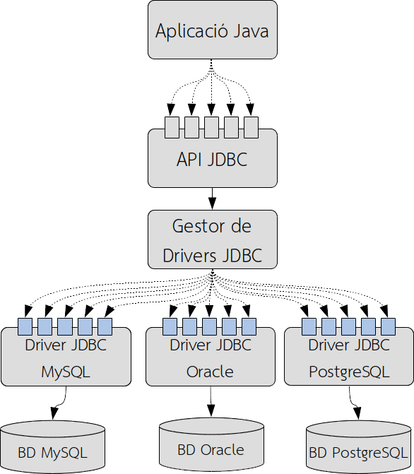

1. Connectors
1.1. The client-server architecture in DBMS
Once we know the object-relational lag, let's focus on how to access to relational databases from programming languages. The RDBMS, became popular in the 80s, and are the most widespread today. Except for some exceptions, they work following a client-server architecture, so we have a server where it runs the DBMS and various clients that connect to the server and make corresponding requests.
RDBMS offered it own programming languages, but were closely tied to them, and the application maintenance was very expensive. For this reason, the trend was decouple (separate) the RDBMS from the programming language, and make use of connection standards between them.
Thanks to the client-server architecture, RDBMS were able to separate data on the one hand, and the programs to access them by others. This versatility had a small drawback, and it is that it was necessary to develop on the one hand the server, but on the other, also the client side in order to be able to connect to servers. These connections between clients and servers will require protocols and specific languages. The concept of middleware is born here, understood as an intermediate layer of persistence, made up of libraries, languages and protocols located on the client and server and that allow connecting the database with the applications.
Although each DBMS initially implemented specific solutions, standards were imposed, among which we find the query language SQL (Structured Query Language), and which assumed a great advance, since it unified the way to access the databases, although the applications continued requiring an API to make use of SQL.
1.2. Database access protocols
When we talk about DB access protocols, we come across two main connection rules:
- ODBC (Open Data Base Connectivity): This is an API (Application Program Interface) developed by Microsoft for Windows systems that allows you to add different plugins to several relational databases based on SQL, in a simple and transparent way. Using ODBC, applications can open connections to the database, send queries, updates and manage results.
- JDBC (Java Database Connectivity), which defines a cross-platform API, which they can use Java programs to connect to the DBMS.
1.3. JDBC
As we said, JDBC is a Java-specific database connection API. Its operation mode is as follows:
- An API is offered, encapsulated in classes, which guarantees uniformity in the way in which the applications connect to the database, regardless of the underlying RDBMS.
- We will need a controller for each database to which we want to connect. Java does not have any specific ODBC library, but it does, in order not to lose the potential of these connections, special drivers were incorporated that act as adapters between JDBC and ODBC, from so that it is possible, through this bridge, to connect any Java application with any ODBC connection. Currently, almost all DBMS have JDBC drivers, but in case you don't know about them have it, you can make use of this ODBC-JDBC bridge.
1.3.1. JDBC architecture
The JDBC standard library provides a set of implementation-free interfaces. Controllers of each DBMS will be in charge of implementation. Applications, in order to access the database, will have to use the JDBC interfaces, so it is for the implementation of each DBMS is completely transparent to the application.

As we can see, Java applications access the different methods that the API specifies as interfaces, but it is the controllers that access the database.
It should be said that applications can use several JDBC drivers simultaneously, and access, therefore, to multiple databases. The application specifies a JDBC driver using a URL (Universal Resource Locator) to the Drivers manager, and this is the one responsible for correctly establishing the connections with the databases through the drivers. Controllers can be of different types:
- Type I or Bridge Controllers, characterized by making use of technology external to JDBC and acting of adapter between JDBC and the specific technology used. An example is the JDBC-ODBC bridge.
- Type II or drivers with partially native API, or native drivers. They are trained on one hand Java and on the other that makes use of operating system libraries. Its use is due to some DBMS that incorporate proprietary plugins that do not follow any standards (usually pre-ODBC/JDBC).
- Type III or Java controllers via network protocol, which are controllers developed in Java that translate JDBC calls to a network protocol against an intermediate server. Is a very flexible system, since changes in the implementation of the database do not affect applications.
- Type IV or pure/100% Java, also called native protocol, and these are drivers written entirely in Java. Requests to the DBMS are made through the network protocol that uses the DBMS itself, so there is no need for native code on the client or an intermediary server. Is the alternative that has ended up being imposed, since it does not require any type of installation.
1.4. MySQL, Docker, Workbench
This year we will use MySQL as DBMS, because its wide use in several contexts and for simplicity. To use it, you should install mysql-server as a service in your system, as you studied last years.
The MySQL server can be installed in your machine, or you can install it on a virtual machine or can be configured as a Docker container. In order to have a cleaner system, the recommended option is with docker container, since you could run several versions of MySQL without interferences between them.
Tip
You have an extra documentation about how to create a MySQL container in a document called Docker per a MySQL. So, and for the rest of the document, we're going to assume that you already have the Docker image of MySQL and from a container running on port 3308 (MySQL uses 3306 by default, but in our container we will expose the service for 3308, in case you already have a local MySQL server running for
3306).
And at last but not least, obviously, you could use a graphical tool to access MySQL, like mysql-workbench or dbeaver. You have to configure a connection to the port of Docker:
Warning
Review your Database Module's notes how to work in workbench:
- Load and run SQL scripts
- Retrieve database structure
- Edit and create SQL
- Edit and save data
In the platform you will find a script DB Jocs Schemna. You will execute in order our samples work fine.